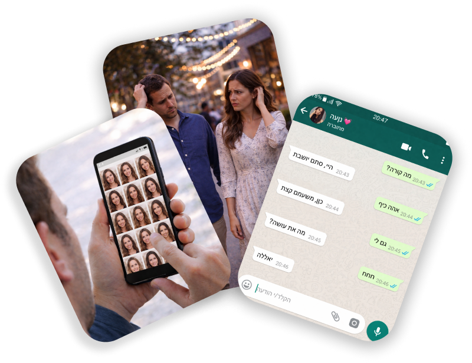

מאגר איכותי לרווקים ורווקות דתיים שמוכנים לבנות קשר. כי הרבה קשרים טובים נפסלים מוקדם מדי.
קבעו שיחת היכרות
הרבה קשרים טובים נפסלים מוקדם מדי, כאן נותנים להם צ׳אנס אמיתי
היי אני שני, נשואה ואמא
גם אני הייתי שם.
שנים של דייטים בלבול, חיפושים, עד שהבנתי שהבעיה היא לא רק באנשים אלא בדרך שבה אנחנו מחפשים וממהרים לפסול.
צ'אנס אמיתי נולד מהמקום הזה!
הבנתי שזה לא רק הסיפור שלי, זו תופעה נרחבת. את בעלי הכרתי ב״שליש גן עדן״ אחרי שעברתי תהליך של דיוק, למידה עצמית ואמונה והיום אני מעבירה הלאה את התובנות שלי לאחרים.
הצעד הראשון מתחיל בשיחה אחת